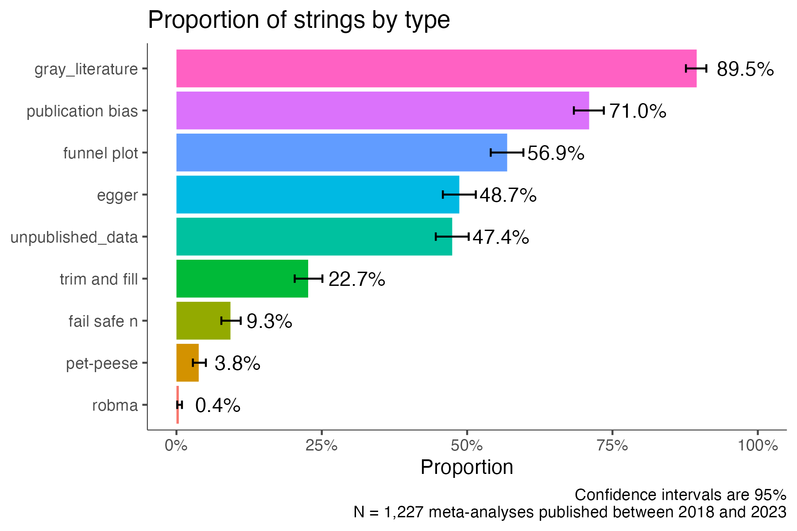
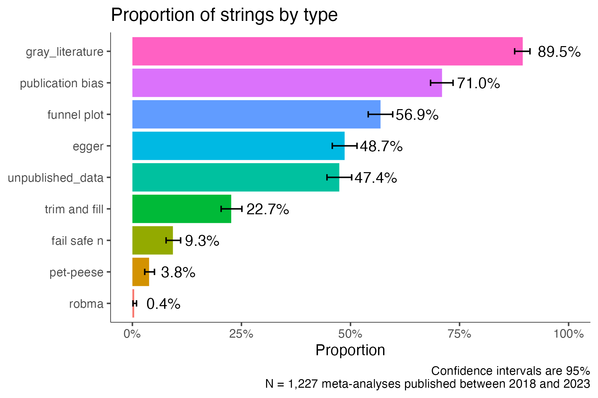
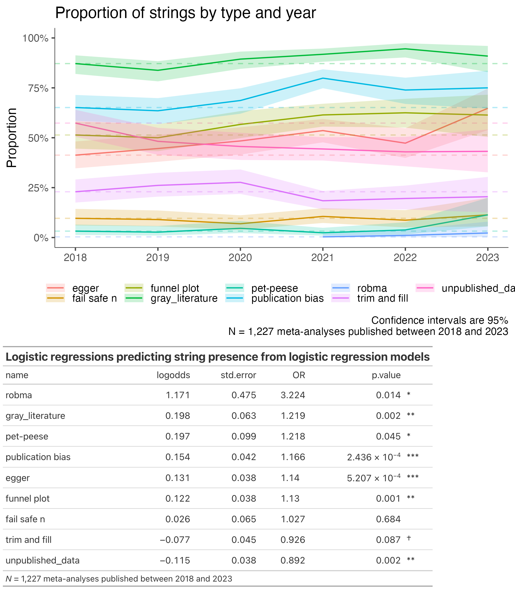
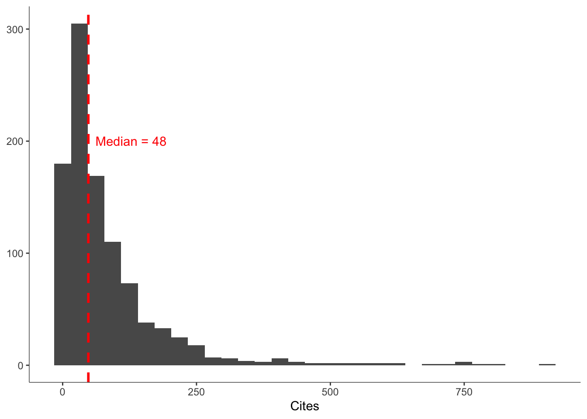

knitr::include_graphics("output/B_proportion_by_type.png")
This is a working document on a potential research project about the true distribution of effect size in psychology and its determinants.
There is a lot that has been said about effect sizes in psychology. (1) There are a bunch of essays that argue that effect sizes are smaller than Cohen’s traditional cutoffs, and are still important (e.g.,götz2022? funder2019?). (2) There are some meta-analyses for particular subdisciplines, or areas of research (e.g., cognitive neuroscienceszucs2017?, nudgesdellavigna2022?, applied psychologybosco2015?). (3) Close to what we want to achieve, there is an estimation of the magnitude of the file drawer effectpolanin2016?. (4) The many labs replication is also relevant, in that it showed that across 100 published experiments, their average published effect size was r = .40, whereas the well-powered replication effect sizes were roughly half of thisopensciencecollaboration2015?. (5) There are also empirical studies demonstrating that even with plenty of data and sophisticated methods life outcomes are really hard to predictsalganik2020?. (A similar in principle simulation studyahadi1989?).
Despite all this, there is no definitive answer for a scientist planning a study and trying to answer the question of what effect size should I expect? How should I plan to power my study? Our vision is that our study would be able to model effect sizes such that I could know that the median effect size in psychology is, say, r = .15. If I know that we are dealing with a social psychology effect, where the predictor and the outcome do not share common method variance (e.g., open ended text correlating with behavior), and the predictor and outcome are separated by 4 years, then, I can expect my effect size to shrink to r = .06.
Aside from the contribution towards sample size planning and power calculations, we also hope to show how miscalibrated researchers are in terms of what effect sizes can be expected, and how we should evaluate them when reading, reviewing, and conducting research.
As shown below, about a quarter of meta analyses do not mention publicaiton bias. Fewer than a half of them use a method to detect publication bias. Fewer than a quarter of them go beyond testing and correct for publication bias. Thus, it is likely that the published record is inflated by publication bias.
knitr::include_graphics("output/B_proportion_by_type.png")
Over the past five years, these indicators seem to slowly improve, but the rate of improvement is definetly slow. Below, I show the increase of the proportion of meta-analyses per year showing these keywords, and results from logistic regression models where publication date predicts whether a given term is increasing across time.
knitr::include_graphics("output/time_combined_image.png")
I ran a search on gscholar and got 1K results. It seems like there is still more, which I’m getting year by year.
library(tidyverse)
library(glue)
library(gt)
df <- read_csv("data/scholar.csv")Rows: 1000 Columns: 26
── Column specification ────────────────────────────────────────────────────────
Delimiter: ","
chr (11): Authors, Title, Source, Publisher, ArticleURL, CitesURL, Type, DO...
dbl (8): Cites, Year, GSRank, ECC, CitesPerYear, CitesPerAuthor, AuthorCou...
lgl (6): ISSN, CitationURL, Volume, Issue, StartPage, EndPage
dttm (1): QueryDate
ℹ Use `spec()` to retrieve the full column specification for this data.
ℹ Specify the column types or set `show_col_types = FALSE` to quiet this message.# unique journals
df %>%
mutate(Source = tolower(Source)) %>% count(Source) %>% arrange(desc(n)) %>% head(20) %>% gt::gt()| Source | n |
|---|---|
| psychological … | 186 |
| clinical psychology … | 65 |
| frontiers in psychology | 63 |
| … psychology | 57 |
| … in psychology | 51 |
| clinical psychology review | 49 |
| psychological bulletin | 38 |
| health psychology … | 30 |
| psychological medicine | 29 |
| educational psychology … | 27 |
| educational psychology review | 23 |
| … clinical psychology | 19 |
| health psychology | 17 |
| psychology of … | 11 |
| … of applied psychology | 11 |
| health psychology review | 10 |
| psychology and … | 9 |
| … health psychology | 8 |
| … on psychological … | 8 |
| current psychology | 7 |
median_cite = median(df$Cites, na.rm = TRUE)
# cites
df %>%
ggplot(aes(Cites)) +
geom_histogram() +
# add a vertical line at the mean
geom_vline(aes(xintercept = median(Cites, na.rm = TRUE)),
color = "red", linetype = "dashed", size = 1)+
annotate("text",x = median_cite, y = 200, label = glue("Median = {median_cite}"), color = "red", hjust = -.1)+
labs(y = NULL)Warning: Using `size` aesthetic for lines was deprecated in ggplot2 3.4.0.
ℹ Please use `linewidth` instead.`stat_bin()` using `bins = 30`. Pick better value with `binwidth`.
library("httr")
download = function(url, filename){
GET(url, write_disk(filename, overwrite = TRUE))
}
df %>%
select(matches("URL")) %>%
head() %>%
gt()| ArticleURL | CitesURL | CitationURL | FullTextURL | RelatedURL |
|---|---|---|---|---|
| https://journals.sagepub.com/doi/abs/10.1177/00332941211051988 | https://scholar.google.com/scholar?cites=1423810680238931467&as_sdt=2005&sciodt=0,5&hl=en | NA | https://www.wilmarschaufeli.nl/publications/Schaufeli/In%20press/Mazetti_PR.pdf | https://scholar.google.com/scholar?q=related:C34MH0VkwhMJ:scholar.google.com/&scioq=source:psychology%7Csource:psychological+intitle:meta+intitle:analysis%7Cintitle:metanalysis%7Cintitle:%22meta+analysis%22&hl=en&as_sdt=0,5&as_ylo=2018&as_yhi=2023&as_vis=1 |
| https://www.cambridge.org/core/journals/psychological-medicine/article/metaanalysis-of-structural-evidence-for-the-hierarchical-taxonomy-of-psychopathology-hitop-model/E6A11956D6900DA3C4EBD5CC832EBAD6 | https://scholar.google.com/scholar?cites=17238591559142422801&as_sdt=2005&sciodt=0,5&hl=en | NA | https://psyarxiv.com/9xf8z/download?format=pdf | https://scholar.google.com/scholar?q=related:ETm7ZrDHO-8J:scholar.google.com/&scioq=source:psychology%7Csource:psychological+intitle:meta+intitle:analysis%7Cintitle:metanalysis%7Cintitle:%22meta+analysis%22&hl=en&as_sdt=0,5&as_ylo=2018&as_yhi=2023&as_vis=1 |
| https://psycnet.apa.org/record/2023-47585-003 | https://scholar.google.com/scholar?cites=17500794304292013713&as_sdt=2005&sciodt=0,5&hl=en | NA | https://www.researchgate.net/profile/Hojjat-Daniali/publication/368690873_A_Global_Meta-Analysis_of_Depression_Anxiety_and_Stress_Before_and_During_COVID-19/links/63f5d31e0d98a97717ab8e88/A-Global-Meta-Analysis-of-Depression-Anxiety-and-Stress-Before-and-During-COVID-19.pdf | https://scholar.google.com/scholar?q=related:kUaBUrJP3_IJ:scholar.google.com/&scioq=source:psychology%7Csource:psychological+intitle:meta+intitle:analysis%7Cintitle:metanalysis%7Cintitle:%22meta+analysis%22&hl=en&as_sdt=0,5&as_ylo=2018&as_yhi=2023&as_vis=1 |
| https://psycnet.apa.org/record/2023-57851-001 | https://scholar.google.com/scholar?cites=3714299031668961296&as_sdt=2005&sciodt=0,5&hl=en | NA | NA | https://scholar.google.com/scholar?q=related:ELA0RErXizMJ:scholar.google.com/&scioq=source:psychology%7Csource:psychological+intitle:meta+intitle:analysis%7Cintitle:metanalysis%7Cintitle:%22meta+analysis%22&hl=en&as_sdt=0,5&as_ylo=2018&as_yhi=2023&as_vis=1 |
| https://link.springer.com/article/10.1007/s43076-021-00116-9 | https://scholar.google.com/scholar?cites=4098649912929352426&as_sdt=2005&sciodt=0,5&hl=en | NA | https://link.springer.com/article/10.1007/s43076-021-00116-9 | https://scholar.google.com/scholar?q=related:6vrWVmFU4TgJ:scholar.google.com/&scioq=source:psychology%7Csource:psychological+intitle:meta+intitle:analysis%7Cintitle:metanalysis%7Cintitle:%22meta+analysis%22&hl=en&as_sdt=0,5&as_ylo=2018&as_yhi=2023&as_vis=1 |
| https://www.cambridge.org/core/journals/psychological-medicine/article/psychological-treatment-of-perinatal-depression-a-metaanalysis/D2D96225C00D4486D3B913A54F1A00F9 | https://scholar.google.com/scholar?cites=10936006227920544622&as_sdt=2005&sciodt=0,5&hl=en | NA | https://www.cambridge.org/core/services/aop-cambridge-core/content/view/D2D96225C00D4486D3B913A54F1A00F9/S0033291721004529a.pdf/div-class-title-psychological-treatment-of-perinatal-depression-a-meta-analysis-div.pdf | https://scholar.google.com/scholar?q=related:buOpDLl_xJcJ:scholar.google.com/&scioq=source:psychology%7Csource:psychological+intitle:meta+intitle:analysis%7Cintitle:metanalysis%7Cintitle:%22meta+analysis%22&hl=en&as_sdt=0,5&as_ylo=2018&as_yhi=2023&as_vis=1 |
# df %>%
# select(Authors, Title, Year, url = FullTextURL) %>%
# mutate(Title = str_replace(Title, "\\/", "-")) %>%
# filter(!is.na(url)) %>%
# mutate(filename = glue("test_downloads/{Year}_{Title}.pdf")) %>%
# mutate(download = map2(url, filename, download))